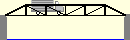
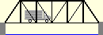
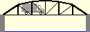
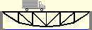

How to design a bridge
How to design a bridge How to design a bridge
 Go back one step
Go back one step
 Go forward one step
Go forward one step
At this point in the design process, you have optimized the for one specific truss configuration. But there are probably other configurations that will result in more economical designs. Design is inherently an iterative process. To achieve a truly optimal design, you will need to experiment with many different configurations, and carefully observe how changes in the truss geometry affect the cost of your design.
Before you try a totally new truss configuration, you should first optimize the shape of your current . You can change the shape of the truss by moving one or more joints--by dragging them to a new location with your mouse or keyboard. This modification is very easy to do and can produce significant reductions in the cost of your design.
For example, suppose you started with the standard Pratt Through Truss for your current design:

You might try reducing its depth:

And you might try increasing its depth:

At first glance, reducing the depth of the truss might seem like the better alternative. Reducing the depth will make the and shorter and, since these will require less material, their cost will decrease. However, reducing the depth of a truss also causes the in the top and bottom to increase. Thus you will probably need to increase the size (and cost) of the top and bottom chord members to ensure that the design still passes the .
If you increase the depth of the truss, the opposite effects will occur. The verticals and diagonals will get longer and, thus, they will increase in cost. But the member in the top and bottom chords will decrease, allowing you to use smaller, less expensive members for the chords.
There is a trade-off between these two competing factors: (1) the member force in the top and bottom chords and (2) the length of the verticals and diagonals. Every truss has an optimum depth, which represents the best compromise between these two factors. The best way to find the optimum depth for your design is through trial and error.
For example, suppose you started with the standard Pratt Through Truss for your current design:
Try moving the top-chord to create a more rounded shape:

Often this minor adjustment can reduce the cost of a design significantly. When a truss has this rounded shape, the member forces tend to be nearly equal in every member in the top chord. Thus, if you get the shape just right, you can use a single optimum for the entire top chord--resulting in a substantial reduction in product cost.
Changing to a more rounded shape is also effective for the bottom chord of a :

Whenever you change the shape of your truss, you will need to repeat the previous three steps in the design process: (1) run the load test, (2) identify and strengthen all members, and (3) optimize the member properties. Only then can you determine whether or not the change was effective in reducing the cost of your design.